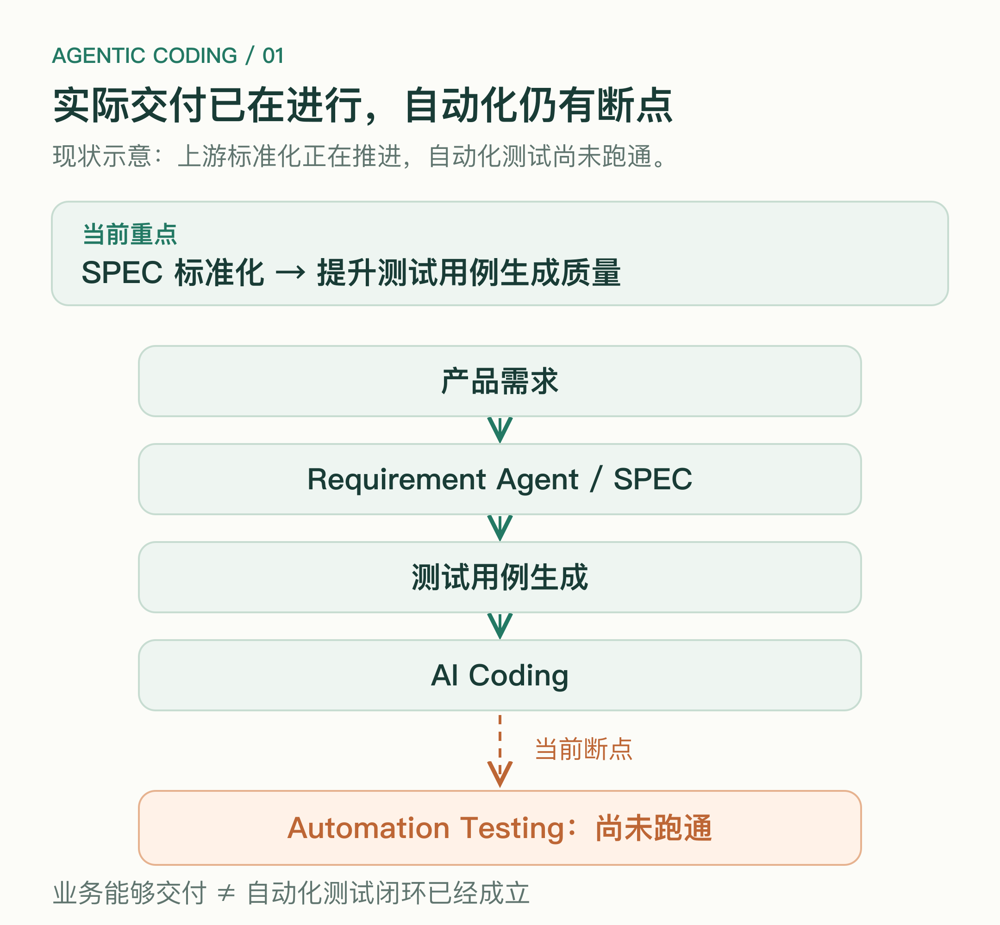
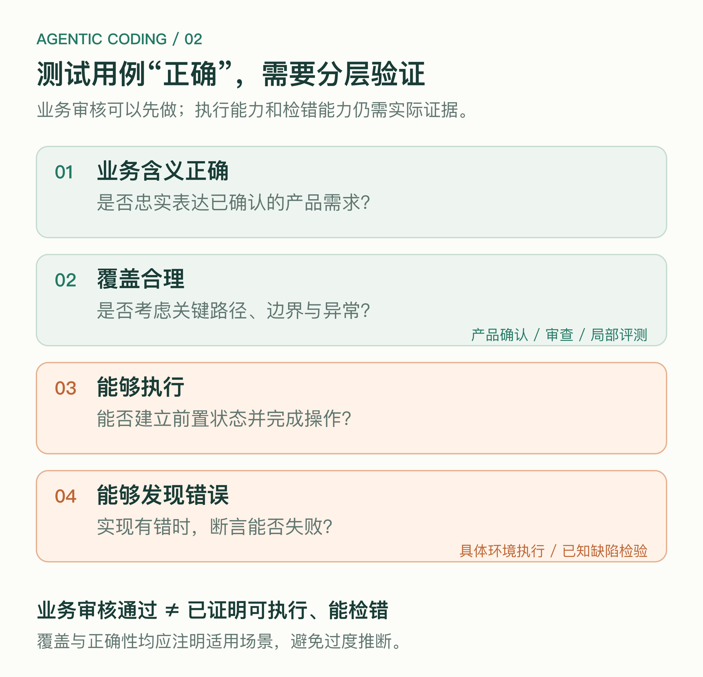
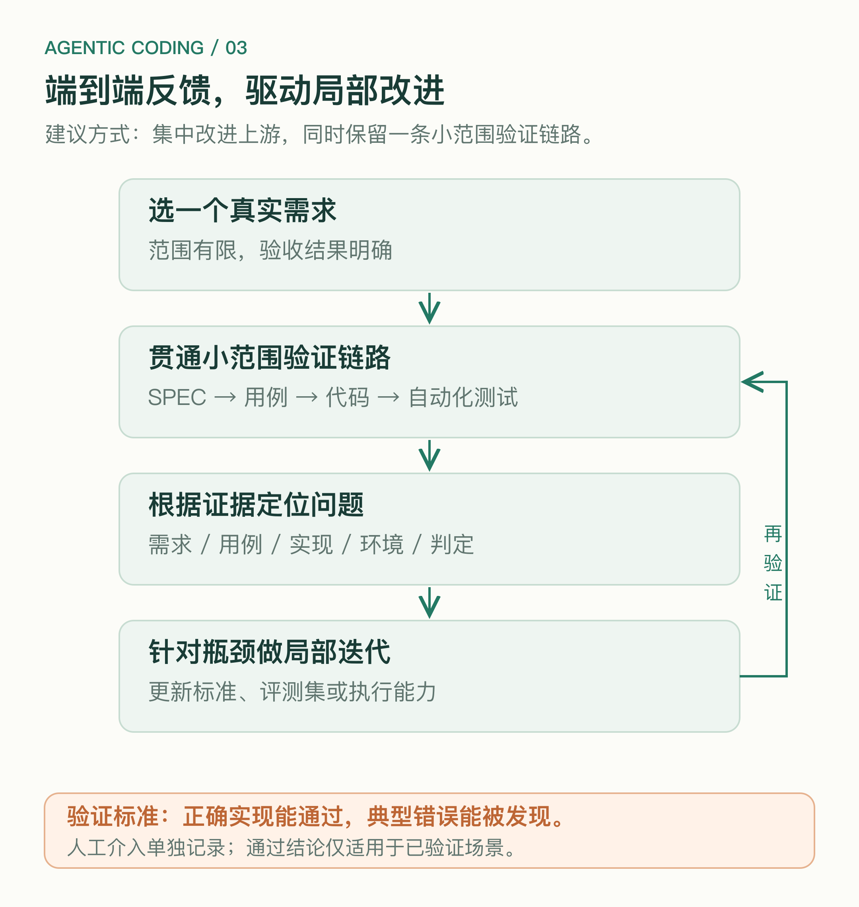

我们的 Agentic Coding Flow 已经在实际交付中使用。但有一段链路始终没有接通：从 coding 到 automation testing。
自动化测试一直没有跑通。现在，工作的重点转向了上游：先把 requirement SPEC 标准化，把需求质量做好，再提升 test case generation 的质量，确保生成的测试用例正确，然后继续建设下游系统。
这个顺序看起来很合理。输入不稳定，下游就很难稳定。但它也带来一个值得讨论的问题：当下游还没有接通，我们能在多大程度上确认，上游已经足够好？
先区分两件事。
Agentic Coding Flow 已经服务于真实交付，意味着我们可以从实际结果中获得反馈。这些反馈有价值，也能帮助发现需求理解和实现中的问题。
但实际交付能够完成，不等于 coding 到 testing 的自动化链路已经成立。生成的测试用例能否被下游准确消费，测试是否真的执行，结果是否足以支持通过结论，仍然需要单独验证。
因此，这里的 E2E，指的是把需求、SPEC、测试用例、代码和自动化测试结果连起来，让这段链路能够产生可检查的反馈。讨论的重点，是怎样补上已经存在的断点。

图 1｜当前链路：实际交付已在进行，自动化测试仍有断点。
SPEC 结构不一致、关键规则缺失、验收标准模糊，都会增加下游的理解成本。
如果每次生成的测试用例都使用不同的表达方式，前置条件、输入数据和预期结果混在一起，自动化测试系统就需要不断猜测。这样的下游，很难稳定。
因此，先定义共同结构，明确需求边界、业务规则和验收条件，再约束测试用例的生成方式，是有价值的基础工作。
特别是当已有失败记录清楚地显示，自动化执行经常被模糊用例阻塞时，集中改进上游完全合理。
需要谨慎的是下一步推论：只要上游质量足够高，就能保证测试用例正确，之后再解决下游即可。
“质量足够高”和“用例正确”，需要拆开来看。
第一层，是业务含义正确。用例是否忠实表达了经过确认的产品需求？预期结果有没有写反？有没有加入未经确认的规则？
第二层，是覆盖合理。正常路径、边界条件和重要异常有没有被考虑？每条用例都正确，也不代表没有遗漏关键场景。
第三层，是能够执行。前置状态能否建立？操作对象是否明确？依赖的数据、账号、时间和外部服务能否控制？
第四层，是能够发现错误。执行后检查了什么？当实现有问题时，这些检查能不能失败？
前两层可以通过产品确认、专家审查和局部评测获得一部分证据。后两层则需要把用例放进具体执行环境中检验。
因此，上游可以先改善，也可以先完成一轮审查。但在下游尚未接通时，把用例标记为“业务审核通过”，比直接称为“已验证正确”更准确。

图 2｜业务审核、执行验证与缺陷检出，需要不同证据。
用一个假设的订阅场景说明。
产品要求：用户取消续订后，保留当前付费周期内的权限，到期后不再扣款。
测试用例写得很清楚：取消续订，确认本期权限保留，并确认下期不扣款。
从业务含义上看，这条用例可能完全正确。但交给自动化系统时，还需要回答：怎样建立一个即将到期的订阅？如何推进时间？从哪里确认扣款没有发生？权限以页面显示为准，还是以实际访问结果为准？
有些问题应该由测试环境或执行框架解决，有些问题则意味着用例缺少必要信息。只有尝试连接，才能看清责任应该落在哪一层。
如果一直只在文档层面审查，很容易把这些问题推迟到下游建设时才发现。届时，上游标准可能已经固定，却没有包含下游真正需要的信息。
标准化最重要的作用，是让不同环节对信息形成稳定的理解。
因此，标准是否合适，需要由生成者和使用者共同验证。
例如，SPEC 可以明确业务规则和验收目标；测试用例可以描述前置条件、操作和可观察结果；执行框架再负责具体的数据准备、工具调用与证据收集。
并非所有执行细节都要塞进 SPEC。否则，业务文档会与某个测试工具过度绑定。反过来，也不能让执行 Agent 自行补全所有缺失信息，否则自动化的结果会依赖它每次怎样猜。
哪些信息属于业务约束，哪些属于执行适配，最好通过实际交接来确定。
如果完全等上游标准成熟后才开始做下游，就存在一种风险：先把一个尚未验证的接口标准化了，随后才发现使用者无法稳定消费。
这并不要求立即完成整个 automation testing 平台，也不意味着暂停 SPEC 标准化。
一个更可控的做法，是在推进上游工作的同时，保留一条范围很小、持续运行的下游验证链路。
选一个真实、范围有限、结果可以明确判断的需求，让它经过当前版本的 SPEC、测试用例生成、代码实现和自动化测试。先支持有限场景，并清楚记录哪些地方仍需要人工介入。
这条链路的目标，是尽早发现交接问题：用例缺了哪些信息，执行器误解了什么，环境缺少什么能力，判定依据是否成立。
人工帮助建立环境或分析失败，可以帮助推进探索，但需要明确标注。尤其是最终通过或失败仍由人判断时，不能把它算作自动化判定已经跑通。
这里讨论的 E2E 也不要求所有检查都通过 UI 完成。适合通过接口、状态查询或其他可靠方式检查的结果，可以使用相应方式。关键是从需求到执行证据的联系能够成立。
一旦这条小链路暴露问题，就可以回到局部快速改进。
如果执行器无法建立前置条件，就检查用例是否缺少信息，或环境是否缺少准备能力。如果用例的业务含义有误，就回到需求理解与确认。如果操作执行了却无法判断结果，就补充可观察结果和检查机制。
对于反复出现的问题，可以建立局部评测集，让 SPEC 和用例生成快速迭代。随后，再把改动放回原来的链路，检查是否真的减少了失败。
还可以准备已知正确和故意出错的实现：正确实现应该通过，典型错误应该被抓住。这样才能区分“自动化任务执行结束了”和“自动化测试具备了辨别能力”。
这些证据只能支持已验证的场景。随着需求类型扩大，还需要继续检查标准和执行机制是否适用。

图 3｜建议路径：小范围验证暴露问题，局部改进后再次验证。
所以，在当前阶段，我不会简单否定“先做好上游”。上游标准化很可能正是必要的工作。
但我也不愿把下游的尝试完全推迟到“上游质量足够好”之后，因为其中一部分质量，恰恰需要下游的实际反馈才能判断。
更合适的节奏，是集中资源改进已经确认的瓶颈，同时让一条小范围的自动化链路持续提供校验。标准可以分版本演进，用例也可以分别记录业务审核、执行验证和缺陷检出情况。
这样，我们既能深入打磨局部，也能及时知道，这些改动是否帮助接上 coding 到 testing 的断点。
在一个已经用于交付的 Agentic Coding Flow 中，下一步的关键，是让真实交付的反馈继续深入到自动化链路里。让 SPEC 的质量、用例的质量和测试执行能力，在相互校验中逐步建立起来。